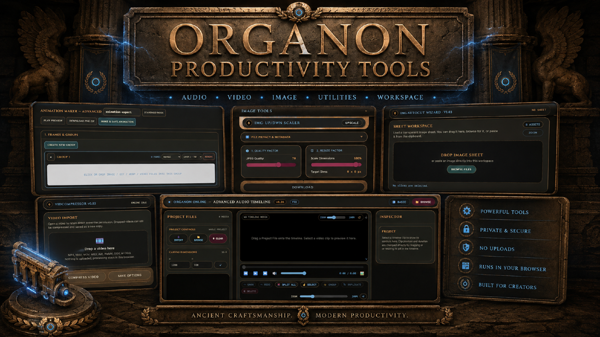

ORGANON
CREATIVE TOOLING / ASSET AUTOMATION / PRODUCTION WORKFLOWS
Organon is a collection of browser-based tools I created to remove repetitive steps from visual and motion production.
The visual toolset includes Auto Cut, which can take one transparent image containing multiple separate assets, detect the individual elements and export them as separately named files. Multi Edit lets me apply the same resizing, colour, transparency and other adjustments across a full batch of images, while conversion tools handle multiple format changes in one workflow.
For motion work, Organon also includes tools for turning video material into editable animation frames and optimised animated assets, with controls for frame timing, background cleanup and animated WebP/GIF output.
The project demonstrates how I approach creative production beyond generation itself: identifying friction in an asset pipeline and building practical tools that make production faster, more consistent and easier to repeat.
Deliverables
Asset auto-separation · batch image editing · format conversion · video-to-animation workflows · animated WebP production
Focus
Creative workflow automation · batch production · reusable tooling · asset consistency · production efficiency
